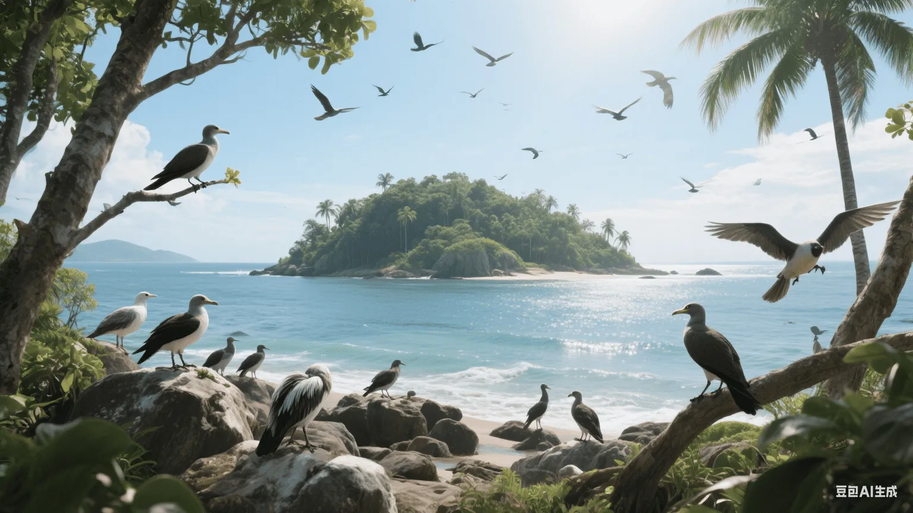

"岛屿是自然的实验室，在这里我们可以观察到进化和生态学原理的完美展现。"
— 岛屿生物地理学家🏝️ 岛屿生物地理学理论
岛屿生物地理学研究岛屿上物种多样性的形成和维持机制，为理解鸟类分布和进化提供了重要框架。
📊 核心概念
- 物种-面积关系：岛屿面积越大，物种数量越多
- 距离效应：距离大陆越远，物种数量越少
- 迁入-灭绝平衡：物种数量达到动态平衡
- 周转率：物种组成不断变化
⚖️ 平衡模型
- 迁入率随物种数增加而下降
- 灭绝率随物种数增加而上升
- 两线交点为平衡物种数
- 大岛和近岛物种数更多
🦜 岛屿鸟类的特征
岛屿环境塑造了鸟类独特的形态、生理和行为特征。
📏 形态变化
- 岛屿巨大症：体型增大
- 岛屿矮化：体型减小
- 飞行能力退化
- 喙部形状特化
- 羽毛颜色变化
🎭 行为适应
- 觅食行为改变
- 筑巢习性调整
- 社会行为简化
- 迁徙行为丧失
- 对人类恐惧减少
🌿 生态角色变化
- 生态位扩展
- 食性改变
- 栖息地利用多样化
- 竞争关系简化
- 捕食关系改变
🧬 岛屿物种形成
岛屿为新物种的形成提供了理想条件。
🚧 隔离机制
- 地理隔离：海洋阻隔基因流
- 生态隔离：不同栖息地适应
- 行为隔离：求偶行为分化
- 时间隔离：繁殖时间差异
🌟 适应辐射
- 达尔文雀：喙部多样化
- 夏威夷蜜雀：生态位分化
- 加拉帕戈斯嘲鸫：岛间分化
- 马达加斯加鸟类：独特进化
🏝️ 特有性
- 高特有种比例
- 古特有种保存
- 新特有种产生
- 特有属和科的形成
🌊 岛屿类型与鸟类群落
不同类型的岛屿支持不同的鸟类群落。
🌊 海洋岛
- 从未与大陆相连
- 物种贫乏但特有性高
- 长距离扩散种类
- 适应辐射明显
🏔️ 大陆岛
- 曾与大陆相连
- 物种丰富
- 古老种群残存
- 灭绝债务存在
🌿 栖息地岛
- 被不适宜栖息地包围
- 山顶、湖泊、森林片段
- 类似真实岛屿效应
- 保护区设计参考
⚠️ 岛屿鸟类的脆弱性
岛屿鸟类面临特殊的生存威胁。
🧬 内在因素
- 种群规模小
- 遗传多样性低
- 生态位特化
- 繁殖率低
- 免疫系统简单
🚨 外在威胁
- 栖息地破坏
- 外来物种入侵
- 疾病传播
- 气候变化
- 人类干扰
💀 灭绝模式
- 岛屿鸟类灭绝率高
- 大型种类首先灭绝
- 特化种类更易灭绝
- 小岛种类风险更高
🛡️ 岛屿鸟类保护
岛屿鸟类保护需要特殊的策略和方法。
👾 入侵种控制
- 猫、鼠等哺乳动物清除
- 入侵植物管理
- 检疫措施加强
- 早期发现和快速响应
🌱 栖息地恢复
- 本土植被恢复
- 筑巢地点提供
- 食物资源增加
- 水源保护
🥚 人工繁殖
- 建立保险种群
- 遗传管理
- 重引入计划
- 技术改进
🔄 迁移保护
- 种群建立
- 栖息地评估
- 适应性管理
- 长期监测
📚 经典研究案例
一些经典的岛屿鸟类研究为理论发展做出了重要贡献。
🐦 加拉帕戈斯群岛
- 达尔文雀的适应辐射
- 进化论的重要证据
- 生态位分化研究
- 保护成功案例
🌺 夏威夷群岛
- 蜜雀类适应辐射
- 入侵种影响研究
- 疾病生态学
- 保护挑战
🥝 新西兰
- 无飞行能力鸟类进化
- 哺乳动物入侵影响
- 保护技术创新
- 生态系统恢复
🔬 现代研究方法
现代技术为岛屿生物地理学研究提供了新工具。
🧬 分子工具
- DNA条形码
- 系统发育分析
- 种群遗传学
- 基因流分析
🛰️ 遥感技术
- 栖息地制图
- 变化监测
- 物种分布模型
- 保护规划
💻 数学模型
- 种群生存力分析
- 气候变化预测
- 保护优先级评估
- 管理决策支持
🔮 未来发展方向
岛屿生物地理学的未来研究重点：
- 气候变化对岛屿生态系统的影响
- 海平面上升的威胁评估
- 新技术在保护中的应用
- 生态系统服务价值评估
- 可持续发展模式探索
- 国际合作机制完善